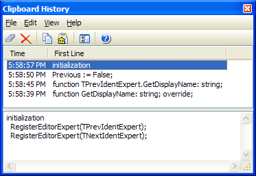

Clipboard History |
|
The Clipboard History expert allows you to view the current and previous text contents of the clipboard. You can re-copy any of the saved items by double-clicking the item or pressing the Copy button. The saved items may be purged at any time by choosing Clear. This expert supports IDE docking.
Several options can be set via the configuration dialog, including the maximum number of items to store, whether or not Clipboard History starts capturing automatically when the IDE starts, and whether or not to hide the form after pasting the selected item into the code editor. The clipboard history data is persistent across IDE sessions, and is stored in a file called ClipboardHistory.xml in your GExperts storage directory.
Note: The Clipboard History expert only tracks standard ASCII (CF_TEXT) items on the clipboard with a size under 512 kilobytes. It does not maintain a history of other clipboard items such as bitmaps, components, etc.
Note: Some applications (such as Remote Desktop) may improperly hook the Windows clipboard chain or create desktops that break the clipboard chain and prevent GExperts from receiving notification of new items on the clipboard. If you experience this problem, try using the Rehook Clipboard menu item in the File menu. 
|